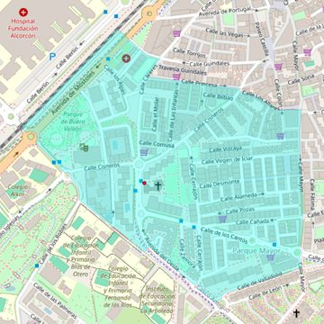

San Pedro Bautista
- Arciprestazgo
- Alcorcón
- Población
- Alcorcón
- Dirección postal
- c/ Cáceres, 27
- Código postal
- 28922
- Extensión
- 0,40 km² (40 ha)
- Teléfono
- 916 100 026
- Correo electrónico
- parroquia.spedrobautista@gmail.com
- Información demográfica
- De la parroquia · De la población (Alcorcón) · Del arciprestazgo (Alcorcón)
- Resumen para imprimir
- La parroquia en una hoja (A4)


Descargar mapaLímites según decreto
Partiendo del punto de confluencia de la calle Mayor con la calle Alfares, arrancan por el eje de la calle Alfares (en dirección noroeste); siguen por el eje de la calle Princesa (en dirección noroeste), por el eje de la calle Cáceres (en dirección noreste), por el eje de la calle Guindales (en dirección noroeste), por una línea recta imaginaria hasta el ferrocarril Madrid-Móstoles (C-5), por el eje de las vías del ferrocarril (en dirección suroeste), por una línea imaginaria desde el paso bajo el ferrocarril al comienzo de la Avenida de Atenas hasta donde coinciden las calles Los Robles, Cisneros y la Avenida Pablo Iglesias (en dirección sureste), por el eje de la calle Los Robles (en dirección sureste), por detrás de los colegios públicos “Sánchez Albornoz” y “Carmen Conde” y del instituto “La Arboleda” (en dirección este), por el eje de la Avenida del Oeste (en dirección sureste), por el eje de la calle Valladolid (en dirección noreste) por el eje de la calle Mayor (en dirección noroeste) hasta la confluencia con la calle Alfares, punto de partida". (Decreto de actualización de límites, 21-6-2005. B.O. de julio-agosto de 2005, pág. 797)
¿Algún dato de esta parroquia es incorrecto o ha cambiado? Comuníquenoslo.